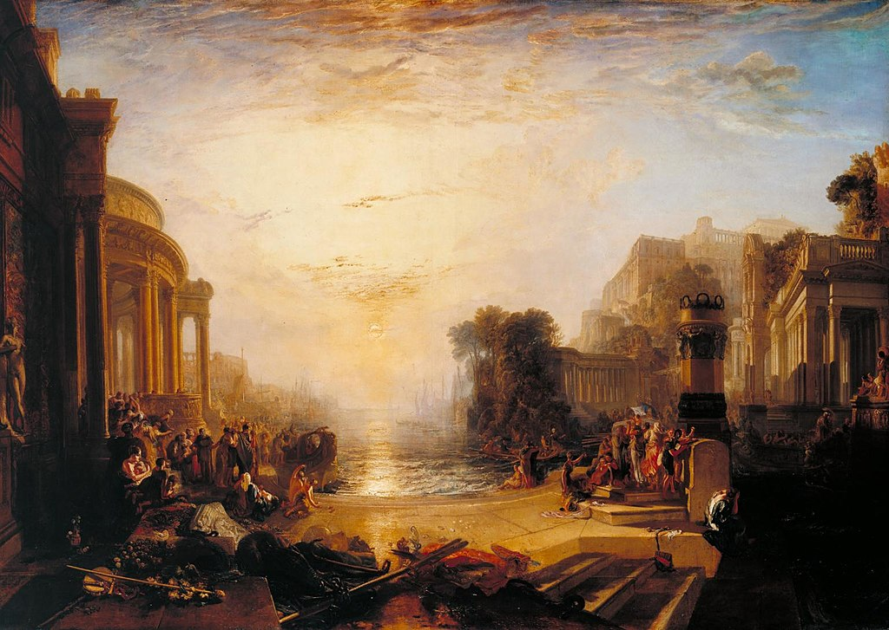

<head>
<meta charset="UTF-8" />
<meta name="keywords" content="drawing, painting" />
<meta name="description" content="drawings by Sunjy" />
<title>Sunjy</title>
<link rel="shortcut icon" type="image/x-icon" href="../../mImages/mCommon/favicon.ico" media="screen" />
<link rel="stylesheet" type="text/css" href="../../mCsses/mCommon/mCssA.css" />
<link rel="stylesheet" type="text/css" href="../../mCsses/mCommon/mCssB.css" />
<link rel="stylesheet" type="text/css" href="../../mCsses/mCommon/mCssC.css" />
<link rel="stylesheet" type="text/css" href="../../mCsses/mCommon/mCssD.css" />
<link rel="stylesheet" type="text/css" href="../../mCsses/mContent/mCssA.css" />
<link rel="stylesheet" type="text/css" href="../../mCsses/mContent/mCssB.css" />
<link rel="stylesheet" type="text/css" href="../../mCsses/mContent/mCssC.css" />
<link rel="stylesheet" type="text/css" href="../../mCsses/mContent/mCssD.css" />
</head>
<script type="text/javascript" src="../../mScripts/mContent/mContentAA.js" /></script>
<script type="text/javascript" src="../../mScripts/mContent/mContentAB.js" /></script>
<script type="text/javascript" src="../../mScripts/mContent/mContentAC.js" /></script>
<script type="text/javascript" src="../../mScripts/mContent/mContentAD.js" /></script>
<script type="text/javascript"></script> 
<script type="text/javascript">
document.write('<div class="mImgAbsolute"></div>');
/*
document.write('<p class="mFontSizeBColor" />From a white paper...</p>');
document.write('<table class="center"><tr><td>');
document.write('');
document.write('</td></tr></table>');
*/
</script>


<script type="text/javascript">
document.write('<p class="mFontSizeBColor" />The Decline of the Carthaginian Empire</p>');
document.write('<p class="mFontSizeSColor" />“The Decline of the Carthaginian Empire” by J. M. W. Turner depicts the final days of the capital city of the ancient Carthaginian civilization.<br><br>Carthage was once the most important trading hub of the Ancient Mediterranean and one of the most affluent cities of the Ancient World.<br><br>However, as Roman power and ambition increased, the Romans fought three wars against Carthage.<br><br>The Roman Republic eventually destroyed the ancient city in the Third Punic War in 146 BC. As the Carthaginian Empire fell, another superpower in the form of the Roman Empire rose.<br><br>Turner saw the rise and fall of once-great empires as a historical inevitability, confirmed by the fall of Napoleon, during Turner’s time. Turner was concerned that the same fate was threatening to overtake the victorious British.<br><br>Turner exhibited a pair of pictures on the theme of the rise and fall of Carthage soon after the end of the Napoleonic Wars. The companion piece to this work is “Dido Building Carthage.”<br><br>Both paintings reflected on the history of that doomed Carthaginian Empire and the current condition of the British Empire.<br><br>The fading sunset grandeur of “The Decline of the Carthaginian Empire” was a warning of the fate that might ultimately follow British complacency following its victory against France.<br><br>The Decline of the Carthaginian Empire<br><br>Carthage developed from a Phoenician colony into the capital of a Punic empire which dominated large parts of the Southwest Mediterranean during the first millennium BC. The legendary Queen Dido is regarded as the founder of the city.<br><br>According to legend, Dido purchased from a local tribe the amount of land that could be covered by an oxhide. She then cunningly cut the oxhide into long thin strips, she then laid out her claim with the long strips and founded an empire.<br><br>As Carthage became a superpower, the Ancient Greek city-state contested with Carthage for the Western Mediterranean culminating in the Sicilian Wars and the Pyrrhic War over Sicily.<br><br>The Carthaginian Republic was one of the longest-lived and most significant states in the ancient Mediterranean. The city was located on the eastern side of the Lake of Tunis in what is now the Tunis in Tunisia.<br><br>The new rising superpower was Rome, and it saw Carthage as an existential threat. The Romans fought three wars against Carthage, known as the Punic Wars.<br><br>“Punic” meaning “Phoenician” in Latin, as Carthage was a Phoenician colony that had grown into an independent kingdom. The Roman Republic destroyed the ancient city in the Third Punic War in 146 BC and later re-developed as Roman Carthage.<br><br>The Fall of Carthage<br><br>Despite initial devastating Rome with naval losses, Rome’s recovery from the brink of defeat. She also survived the terror of a 15-year occupation of much of Italy by the famous Cathegian General Hannibal.<br><br>The end of the series of wars resulted in the defeat of Carthaginian power and the destruction of the city by Scipio Aemilianus.<br><br>After the surrender of Carthage, the Romans pulled the Phoenician warships out into the harbor and burned them before the city, and then went from house to house, capturing and enslaving the people.<br><br>The Roman general Scipio Aemilianus Africanus ordered the city to be sacked. The city was set ablaze and razed to the ground, leaving only ruins and rubble.<br><br>He forced its surviving inhabitants into slavery, with about 50,000 Carthaginians sold into slavery. Legend then claims that he plowed the city over and sowed it with salt to make it infertile to ensure Carthage would never rise again.<br><br>Carthage Foundation Legends<br><br>According to Roman history, Phoenician colonists from modern-day Lebanon, led by Dido, founded Carthage c. 814 BC. Dido was an exiled princess of the ancient Phoenician city of Tyre.<br><br>At its peak, the metropolis she founded ruled 300 other cities around the western Mediterranean Sea and led the Phoenician world.<br><br>Virgil’s Roman epic, the Aeneid, first introduces Queen Dido. Virgil ends his legend of Dido with the story that, when Aeneas farewells Dido, her heartbroken, she orders a pyre to be built where she falls upon Aeneas’ sword.<br><br>As she lies dying, she predicts eternal strife between Aeneas’ people and her own. Aeneas goes on to found the predecessor-state of the Roman Kingdom.<br></p>');
document.write('<table class="center" /><tr><td>');
document.write('<br>Carthage was once the most important trading hub of the Ancient Mediterranean and one of the most affluent cities of the Ancient World.<br><br>However, as Roman power and ambition increased, the Romans fought three wars against Carthage.<br><br>The Roman Republic eventually destroyed the ancient city in the Third Punic War in 146 BC. As the Carthaginian Empire fell, another superpower in the form of the Roman Empire rose.<br><br>Turner saw the rise and fall of once-great empires as a historical inevitability, confirmed by the fall of Napoleon, during Turner’s time. Turner was concerned that the same fate was threatening to overtake the victorious British.<br><br>Turner exhibited a pair of pictures on the theme of the rise and fall of Carthage soon after the end of the Napoleonic Wars. The companion piece to this work is “Dido Building Carthage.”<br><br>Both paintings reflected on the history of that doomed Carthaginian Empire and the current condition of the British Empire.<br><br>The fading sunset grandeur of “The Decline of the Carthaginian Empire” was a warning of the fate that might ultimately follow British complacency following its victory against France.<br><br>The Decline of the Carthaginian Empire<br><br>Carthage developed from a Phoenician colony into the capital of a Punic empire which dominated large parts of the Southwest Mediterranean during the first millennium BC. The legendary Queen Dido is regarded as the founder of the city.<br><br>According to legend, Dido purchased from a local tribe the amount of land that could be covered by an oxhide. She then cunningly cut the oxhide into long thin strips, she then laid out her claim with the long strips and founded an empire.<br><br>As Carthage became a superpower, the Ancient Greek city-state contested with Carthage for the Western Mediterranean culminating in the Sicilian Wars and the Pyrrhic War over Sicily.<br><br>The Carthaginian Republic was one of the longest-lived and most significant states in the ancient Mediterranean. The city was located on the eastern side of the Lake of Tunis in what is now the Tunis in Tunisia.<br><br>The new rising superpower was Rome, and it saw Carthage as an existential threat. The Romans fought three wars against Carthage, known as the Punic Wars.<br><br>“Punic” meaning “Phoenician” in Latin, as Carthage was a Phoenician colony that had grown into an independent kingdom. The Roman Republic destroyed the ancient city in the Third Punic War in 146 BC and later re-developed as Roman Carthage.<br><br>The Fall of Carthage<br><br>Despite initial devastating Rome with naval losses, Rome’s recovery from the brink of defeat. She also survived the terror of a 15-year occupation of much of Italy by the famous Cathegian General Hannibal.<br><br>The end of the series of wars resulted in the defeat of Carthaginian power and the destruction of the city by Scipio Aemilianus.<br><br>After the surrender of Carthage, the Romans pulled the Phoenician warships out into the harbor and burned them before the city, and then went from house to house, capturing and enslaving the people.<br><br>The Roman general Scipio Aemilianus Africanus ordered the city to be sacked. The city was set ablaze and razed to the ground, leaving only ruins and rubble.<br><br>He forced its surviving inhabitants into slavery, with about 50,000 Carthaginians sold into slavery. Legend then claims that he plowed the city over and sowed it with salt to make it infertile to ensure Carthage would never rise again.<br><br>Carthage Foundation Legends<br><br>According to Roman history, Phoenician colonists from modern-day Lebanon, led by Dido, founded Carthage c. 814 BC. Dido was an exiled princess of the ancient Phoenician city of Tyre.<br><br>At its peak, the metropolis she founded ruled 300 other cities around the western Mediterranean Sea and led the Phoenician world.<br><br>Virgil’s Roman epic, the Aeneid, first introduces Queen Dido. Virgil ends his legend of Dido with the story that, when Aeneas farewells Dido, her heartbroken, she orders a pyre to be built where she falls upon Aeneas’ sword.<br><br>As she lies dying, she predicts eternal strife between Aeneas’ people and her own. Aeneas goes on to found the predecessor-state of the Roman Kingdom.<br>" />');
document.write('</td></tr></table>');
</script>


